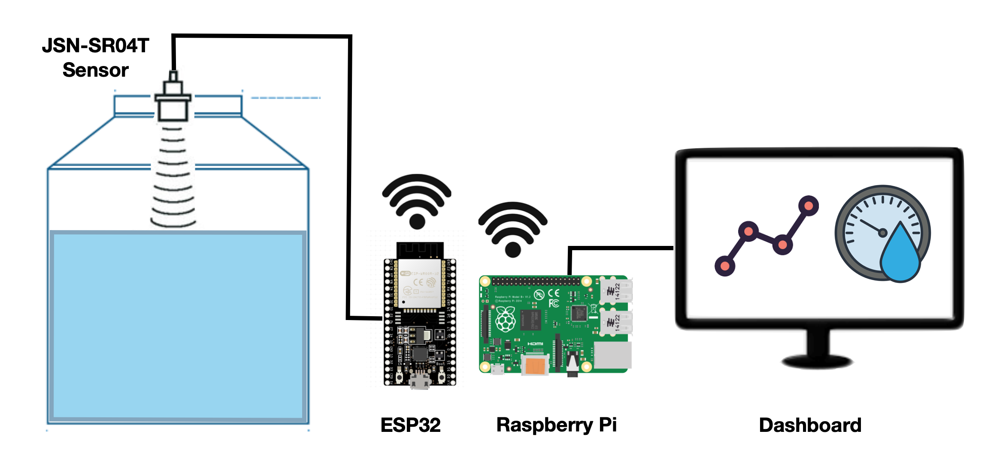
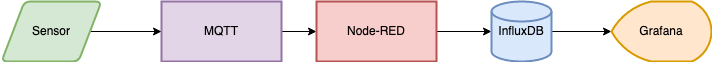
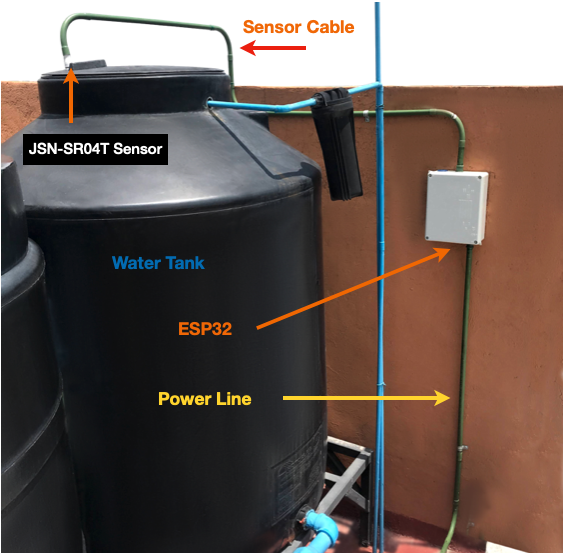
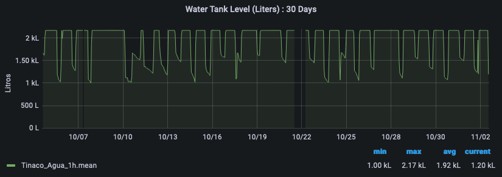

Table of Contents
In this post, I'll explain how to make a water level sensor with a JSN-SR04T ultrasonic sensor, an ESP32 micro controller and a Raspberry Pi.
If you want to jump to the GitHub repository, click here. You can also find a copy of the code at the end of the post.
Why make a water level monitor
In Mexico City, as well as other Latin American countries, water is usually collected in a water tank at ground level and then pumped to another water tank at the top of the building with a water pump. Water pressure at the home or business is obtained by the height of the water tank, instead of using a compression tank.
The top water tank can sometimes be hard to reach and If there's a leak or a water shortage, by the time its noticed the water tanks may already be empty and need immediate attention.

Diagram showing a typical setup for a house in Mexico City
To help with this problem we can place a water level sensor in the top water tank and set an alert if the water level falls below 50%.
With this setup we can monitor the tank remotely, check the amount of water I use and get an alert if there's a problem before it's an emergency.
How the water level sensor works
The JSN-SR04T is a waterproof ultrasonic sensor placed in the lid of the water tank. It takes measurements every 5 minutes and calculates the distance from the lid to the water level inside the tank. It then transmits that information to an ESP32 micro controller.

JSN-SR04T Waterproof ultrasonic sensor
Using Wi-Fi, the ESP32 then sends the measurement to a Raspberry-Pi computer in the same network using the MQTT protocol.

ESP32 micro controller. You can also use an ESP8266.
The Raspberry Pi then calculates the volume of water in the tank and saves it to an Influx DB database.

Raspberry Pi computer
Also in the Raspberry Pi, Grafana, an open-source visualization software is used to read the database and display the information.
Finally, an alarm is set up in Grafana, so if the water level goes below a threshold value, an alarm is triggered, and a Telegram message is sent to alert users of the problem.

Flow diagram of the water level monitor
Components of the water level sensor
To build the water level sensor the following is needed:
Hardware:
- 1 ESP32 micro controller or 1 ESP8266 micro controller
- 1 Raspberry Pi computer
- 1 JSN-SR04T ultrasonic sensor
- A power outlet for the micro controller and sensor
- Electrical PVC conduit (optional)
- 3D printed sensor fitting (optional)

3D Printed sensor fitting
Software:
- A WiFi connection
- ESP8266 board
- EspMQTTClient.h Arduino library
- Node-RED
- Mosquitto MQTT
- InfluxDB
I chose the JSN-SR04T sensor because it's waterproof and can provide an accurate range up to 4 meters. It requires 3V to work so it can be powered directly by the ESP32 micro controller.
For the setup to work, the ESP32 must be in range of your Wi-Fi network. This way it can send the data from the sensor to the Raspberry-Pi. Also, both the ESP32 and the Raspberry Pi need to be in the same local area network.
You can use either an ESP32 or an ESP8266 micro controller. Both will work and both are set up in exactly the same way.
How to build the water level sensor
Connections
To set up the sensor simply connect the wires following the electrical diagram below:

Electrical connections diagram
Outdoor housing
Since this is an outdoor setup, place the cables inside an electrical conduit to protect them from the rain and the sun.
You will also need to make sure to place an electrical outlet nearby to power the ESP32 and the sensor.
To protect the ESP32, part of the ultrasonic sensor and the power outlet, house everything inside a waterproof electrical box attached to a wall.

Waterproof electrical box setup
Inside the electrical box, fix the ESP32 and part of the sensor using Din rails to keep it in place.
To make an exact adapter, you can buy Din rail mounts or get the 3D printed files and make your own from here.
To set up the sensor, drill a hole at the top of the water tank. The sensor has silicone pressure fittings that should keep it fixed in place.
You can make a 3d printed water tank adapter to make sure the sensor cable is protected from the elements.

Sensor installation detail
Measurements used
Now we must take the measurements of the water tank to calculate its maximum water volume.
This particular water tank can be separated into two different shapes: A cylinder and a cone with its top cut off (called a frustum cone).

Water tank measurements
The formulas to calculate the volume of both shapes are:

Cylinder volume formula

Frustum volume formula
Using both formulas, we can calculate the volume for the water tank in the following way:
- Cylinder volume: 998 Liters
- Frustum volume: 119 Liters
- Total volume: 1,117 Liters
In this case, there were two identical water tanks, so we doubled the amount to get the maximum total water volume.
Reading the water level sensor data
After taking the measurements of the water tank and calculating its volume, we can use the sensor to calculate the height from the top of the water tank to the water line and then subtract that height from the frustum and cylinder formulas.
To calculate the distance from the sensor to the water line we used this code and uploaded it to the ESP32.
The code reads the JSN-SR04T sensor data and sends it through MQTT to the Raspberry Pi.
Once uploaded, open the Arduino serial monitor to make sure it was working correctly.
Connect the Raspberry Pi and confirm that the Mosquitto MQTT Broker is receiving the values that the ESP32 is reporting.

Complete water level monitor setup
Saving the values to a database
After confirming that MQTT is working correctly, we need to configure Node-RED to read the MQTT data, save it as as JSON object and then write it to a Influx DB database which was previously set up.

Node-RED setup in Raspberry Pi
- The 'Water Level' node reads the MQTT message.
- The 'Water Level Calculation' node calculates the water volume taking into account the distance to the waterline.
- The 'Database Storage' reads the volume variable every 5 minutes.
- The 'Prepare InfluxDB Payload' node adds the date and time, and saves the output as a JSON object.
- The 'NivelTinaco_Agua' node saves the information to Influx DB in a database with the same name.
- Green nodes are used for debugging and testing.
The rest of the nodes are configured through the node menu in Node-RED and don't need any code.
To check that the data was accessible, log into the Influx DB database using the terminal and take a look at the values.

InfluxDB database showing stored data
Visualizing the data
After making sure that the information is getting written into the influx DB database correctly, lets configure Grafana to visualize the data.
Grafana is a great tool for data visualization because its open source, easy to use, and produces great dynamic charts.
You can make a dashboard with a Gauge reading for the current water level and also a time series to display the water values over a 24-hour period.

Current water level gauge

24-hour water level time series
In the graph you can see how the water level falls periodically (morning showers, washing clothes at midday) and is gradually restored over time.
Water levels don't seem to fall below the 1,000L mark, but an alarm is set to send a telegram message if the water level falls below this threshold value.
How to use the sensor data
The sensor data is useful because it checks the water level every 5 minutes and sends an alarm if the level is too low.
It lets us know if there's a problem, which gives us time to fix it with enough water available for essential tasks.
It is also a useful sensor because it allows us to check the daily water consumption and how that trend changes over time.
Measuring is the first step towards efficiency and a more sustainable future.
More resources
I hope you found this post interesting. Building the water sensor was a fun and rewarding project, and I've found it to be a very useful project.
If you decide to build a similar water level monitoring setup, I encourage you to get creative and see how you can customize it to fit your specific needs. There are many possible variations and improvements you could make, like integrating it with smart home systems or expanding the sensor network to multiple tanks. The key is to start small, experiment, and don't be afraid to troubleshoot when things don't work as expected.
Feel free to contact me if you decide to build one and you need any help.
I also made IoT Energy Monitor. You can find the post about that here.
Finally, here are some additional resources that I used to make this project possible:


Code
Arduino code uploaded to the ESP32:
C++ (Arduino)
// Code to measure water level in a water tank
// Mills Function
const unsigned long event_interval = 300000; // 5 minute interval, 300 second
//const unsigned long event_interval = 2000; // 2 second interval. For testing
unsigned long previous_time = 0;
// MQTT Library
#include "EspMQTTClient.h"
#define WIFI_SSID "<Wifi_Username_here>" // WiFi Username
#define WIFI_PASS "<Wifi_Password_here>" // Wifi Password
#define BROKER_IP "<MQTT_ip_here>" // IP address of MQTT broker
#define BROKER_USERNAME "<broker_username_here>" // Broker username
#define BROKER_PASSWORD "<broker_password_here>" // Broker password
#define CLIENT_NAME "<device_name_here>" // MQTT client name to identify the device
#define BROKER_PORT <mqtt_port_here> // MQTT Port. No "" needed
#define lastwill_topic "<lastwill_topic_here>" // MQTT topic to report last-will and testament.
#define lastwill_text "<lastwill_message_here>" // MQTT message to report last-will and testament.
String client_name = CLIENT_NAME; // MQTT Topic to report initial value
String startup_topic = "<startup_topic_here>"; // MQTT Topic to report startup
String water_level_topic = "<reporting_values_topic_here>"; // MQTT topic to report values
// Function to connect to MQTT
EspMQTTClient client(
WIFI_SSID,
WIFI_PASS,
BROKER_IP,
BROKER_USERNAME,
BROKER_PASSWORD,
CLIENT_NAME,
BROKER_PORT
);
// Water Sensor pins
#define TRIG 14 //GPIO Number 14, D5
#define ECHO 12 //GPIO Number 12, D6
void setup() {
Serial.begin(115200); // Serial monitoring
// Enable debugging messages sent to serial output
client.enableDebuggingMessages();
// Enable the web updater.
client.enableHTTPWebUpdater();
// MQTT Last Will & Testament
client.enableLastWillMessage( lastwill_topic , lastwill_text);
// Water level sensor Pin Setup
pinMode(TRIG, OUTPUT); // Initializing Trigger Output
pinMode(ECHO, INPUT_PULLUP); // Initializing Echo Input
}
// MQTT Initial Connection
void onConnectionEstablished() {
client.publish(startup_topic, String(client_name + " is now online."));
}
void loop() {
// MQTT Loop: Must be called once per loop.
client.loop();
// Mills Loop
unsigned long current_time = millis();
// Mills if Statement
if(current_time - previous_time >= event_interval) {
// Set the trigger pin to low for 2uS
digitalWrite(TRIG, LOW);
delayMicroseconds(2);
// Send a 20uS high to trigger ranging
digitalWrite(TRIG, HIGH);
delayMicroseconds(20);
// Send pin low again
digitalWrite(TRIG, LOW);
// Read pulse times
int distance = pulseIn(ECHO, HIGH,26000);
//Convert the pulse duration to distance
distance= distance/58;
//Print Result in serial monitor
Serial.print("Distance ");
Serial.print(distance);
Serial.println("cm");
// MQTT Client Publisher
client.publish(water_level_topic, String(distance));
// Mills Update timing for next time
previous_time = current_time;
}
}
Node-RED Code used:
Water Level Calculation node:
JavaScript (Node-RED)
// Code to calculate the available water in the water tank.
// Used in node: 'Water Level Calculation'
// Get sensor distance in meters
msg.payload = Number(msg.payload)/100;
sensor_distance = msg.payload;
// Constants
var pi = 3.141592;
var Liters = 0;
var VolumeFullCylinder = 998;
// Function to calculate water in Frustum
function FrustumVolume(x) {
height = 0.35 - x
FrustumWaterVolume = (pi/3)*height*(0.55**2 + 0.275**2 + 0.55*0.275)
return FrustumWaterVolume*1000
}
// Function to calculate water in Cylinder
function CylinderVolume(x) {
height = 1.05 - x + 0.35
CylinderWaterVolume = pi * 0.55**2 * height
return CylinderWaterVolume*1000
}
// Test to check total water volume
if (sensor_distance < 0.20) {
Message = "Error: Value is too low. Check Sensor";
Liters = 0;
msg.payload = Liters
} else if (sensor_distance >= 0.20 && sensor_distance <= 0.35) {
Message = "Water is in Frustum.";
Liters = FrustumVolume(sensor_distance)+ VolumeFullCylinder;
Liters = Math.round(Liters*2) // Multiply x 2 because there are 2 water tanks
msg.payload = Liters
} else if (sensor_distance > 0.35 && sensor_distance <= 1.40) {
Message = "Water is in the cylinder section.";
Liters = CylinderVolume(sensor_distance);
Liters = Math.round(Liters*2) // Multiply x 2 because there are 2 water tanks
msg.payload = Liters
} else {
Message = "Error: Value is to high. Check Sensor";
Liters = 9999;
msg.payload = Liters
}
// Prepare node to send information
msg.payload = Number(msg.payload);
flow.set("water_in_tank",msg.payload);
flow.set("water_level_sensor","ESP32");
return {payload: msg.payload};
Prepare InfluxDB Payload node:
JavaScript (Node-RED)
// Code to prepare water level data to save it into InfluxDB
// Used in node: 'Prepare InfluxDB Payload'
var today = new Date();
var date = today.getFullYear()+
'-'+ (today.getMonth()+1)+
'-'+ today.getDate() +
' ' + today.getHours() +
":" + today.getMinutes() +
":" + today.getSeconds();
msg.payload = {
Timestamp:date,
Device:flow.get("water_level_sensor"),
Water_Level_In_Tank:flow.get("water_in_tank"),
}
return msg;
Get in touch!
I'm currently open to work and I'd be happy to chat.
Feel free to reach out if you are interested in what I can bring
to your project or team.